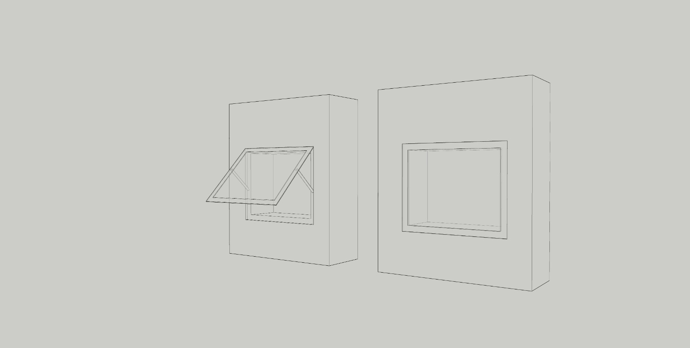
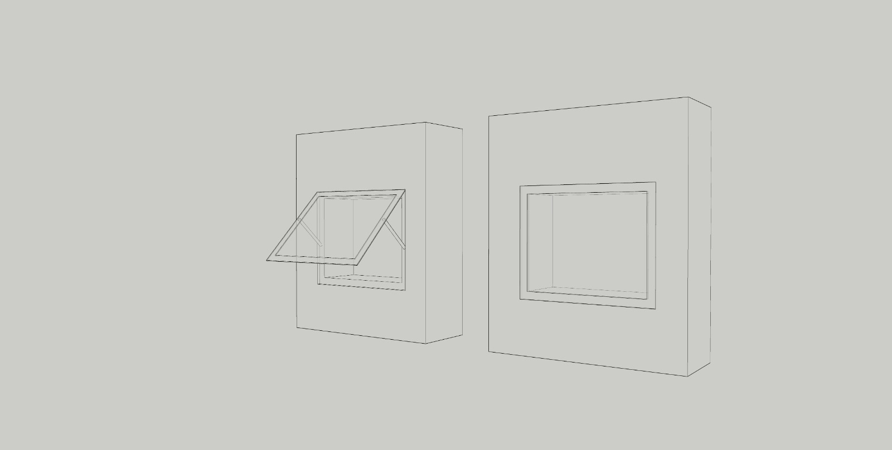

Duvar Tipi Vitrin
Duvar tipi vitrinler, genellikle galerilerin ortasında ya da duvarlara yerleştirilerek kullanılır. Bu vitrinler, mankenlerden heykellere, müzik aletlerinden mobilyalara kadar geniş bir yelpazede eserlerin sergilenmesi için mükemmeldir. Farklı boyut ve şekillerde tasarlanabilen bu vitrinler, uzun veya kısa tabanlarla, ayaklı ya da ayaksız seçenekler sunar. Ayrıca, çeşitli eserleri sergilemeye uygun esnek raflar ve aydınlatma çözümleriyle donatılabilir.
 

Masa Tipi Vitrin
Masa vitrinleri, sergilenen eserlerin üstten gözlemlenmesine olanak tanır. Etkili aydınlatma ve ürünlere daha yakın bir şekilde bakabilme imkânı, küçük detayların daha net bir şekilde incelenmesini sağlar. Bu tür vitrinler, kullanım açısından oldukça pratiktir. Ayrıca, motorlu ve amortisörlü açılım seçeneklerine de sahiptir.
Kule Tipi Vitrin
Genellikle dört ya da beş camlı olarak tasarlanan bu bağımsız üniteler, sergilenen eserlerin her açıdan rahatça görülebilmesi için mükemmel bir seçenektir. Bu tür vitrinler, farklı donanım seçenekleri, kolay erişim imkânları, yüksek güvenlik önlemleri ve eserlerin sağlıklı bir şekilde korunmasını sağlayan gerekli koşulları sunar.

Dairesel Vitrin
Dairesel vitrinler, sergilenen eserlerin 360 derece ile çevrelenmesiyle ürünlere daha yakın bir şekilde bakabilme imkânı, küçük detayların daha net bir şekilde incelenmesini sağlar. Bu tür vitrinler, kullanım açısından oldukça pratiktir.
Orta Tip Vitrin
Orta tip vitrinler, görsel olarak dikkat çekici olmalarının yanı sıra, müşterilerin rahatça görebileceği ve inceleyebileceği şekilde düzenlenmişlerdir. Orta tip vitrinler, genellikle yüksekliği ortalama seviyelerde olan ve ürünlerin sergilenmesini optimize eden tasarımlara sahiptir.
Askı Vitrin
Askı vitrinler, ürünlerin açıkça görülebilmesini sağlarken, yerden tasarruf sağlar ve düzenli bir sergileme sunar. Ancak, açık tasarımları nedeniyle ürünlerin korunması ve düzeni açısından dikkatli yerleştirilmesi gereklidir.
Gömü Tip Vitrin
Gömü tip vitrinler, genellikle ürünlerin yer altına yerleştirildiği ve sadece üst kısmının görülebileceği şekilde tasarlanmış vitrinlerdir. Bu vitrinler, özellikle değerli veya hassas ürünlerin güvenli bir şekilde sergilenmesi amacıyla kullanılır. Şeffaf cam paneller sayesinde ürünler rahatça görülebilirken, aynı zamanda dış etkenlerden korunmuş olur.